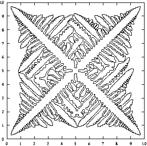
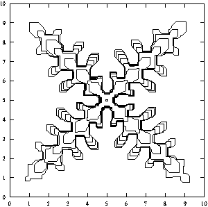
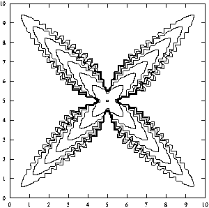
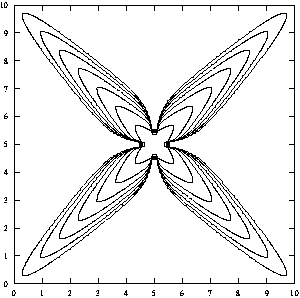

{kind=link}
{kind=link}
![[HOME]](dendriticgrowth_files/home.gif) The Geometry Center Home Page
The Geometry Center Home Page
Article: 96 of geometry.college Xref: news3.cis.umn.edu geometry.research:87 geometry.college:96 Newsgroups: geometry.research,geometry.college From: sander@geom.umn.edu (sander) Subject: Dendritic Growth Organization: Geometry Center, University of Minnesota Date: Thu, 16 Sep 1993 14:26:12 GMT Lines: 152
In a solution of liquid or gas at approximately the temperature of solidification which contains a small crystal. What shape forms as the crystal continues to grow? For example, how do ice crystals form in a container of water or in a cloud? One possibility is the creation of dendrites, objects such as snowflakes with complex spiny structure, as pictured in the figures. (The figures are all made by Andy Roosen.)
The boundary between liquid and crystal has two main governing forces on it; first, there is the energy of surface tension. This means that there is a tendency for the area of the surface of the crystal to decrease. Therefore the rate of solidification depends on the curvature of the surface. the cold temperature of the liquid means that it has a tendency to freeze. However, the process of freezing liquid produces a latent heat of fusion. Thus every time freezing takes place in some area, the solution surrounding the area gets warmer and less likely to freeze further until the heat has diffused throughout the liquid.
As a result of the force of temperature, if there is a small bump on a crystal, the heat of fusion near the bump diffuses quicker since it is protruding into the liquid, thereby increasing the rate at which crystal forms. If the only force on a crystal was the temperature, these bumps in the crystal would become arbitrarily thin. However, since there is also surface tension, the bumps stay a finite thickness. Since in a natural physical system there is always noise, there are always enough small perturbations to make the spiny structure characteristic for dendrites.
This week at the Geometry Center, a group of researchers known as the Minimal Surfaces Team has convened with the object of studying dendrites. Formed five years ago, the team meets at the Center to work on the mathematics of minimal surfaces. Although Jean Taylor of Rutgers University and Fred Almgren of Princeton University are the only remaining members from the original team, the aim remains the same. This year the eight members of the team come from a variety of universities, as well as from the National Institute of Standards and Technology (N.I.S.T.). They are studying the precise growth methods of dendrites as described above. The interest is both theoretical and practical; the study of dendrites has applications in areas such as metallurgy.
Starting with basic assumptions about the laws governing the dendritic growth, the members work on applying computational and mathematical techniques. I talked to Almgren as well as Andy Roosen, a researcher from N.I.S.T. Each told me about the particular aspects of dendrites that they are studying. Here is a brief description of their research.
To date, most of the research about dendrites has been about smooth two-dimensional objects. Almgren has extended the results to a three-dimensional model. It was a challenge to create a practical three-dimensional algorithm because the model of crystal growth is so costly in terms of time and storage. In order to conserve these quantities, he used a special efficient partition of the space.
A standard method to partition space is to use an evenly spaced three-dimensional grid. However, it is not necessary to have this kind of precision far away from the crystal, since there will only be large changes near the interface of solution and crystal. Almgren's method is to divide the space in large blocks far from the crystal and finer blocks close to the crystal. Since the structure is constantly changing, it is necessary to repartition the space at every step. Almgren has worked on this with Princeton graduate students Nung Kwan Yip and David Caraballo and Rutgers undergraduate student Sharon Caraballo. Together they have constructed a practical algorithm to accomplish the repartition.
Roosen works on another generalization of the smooth planar case: rather than extending the dimension of the dendrites, he studies dendrites which are not smooth. Starting with some work of Taylor on faceted dendrites, Roosen has incorporated temperature effects. He restricts the crystal boundary to a limited number of possible directions; in other words, the boundary consists of straight lines, and these lines can only have certain specified directions.
Using the restriction of linear sides in a limited number of directions, Roosen imposes a change in temperature across a side. Experimentally, it is known that a flat side with a temperature change along it will not remain flat; it will break into segments. Roosen has constructed a model of this behavior. He determine mathematically where the model will break into several linear segments. The model appears physically accurate.
One interesting point about the theoretical model is that if the grid is too fine, the model it fails to produce the spiny structures always seen with actual dendrites. In other words, in order to model the physical system, one must either be inaccurate or reintroduce noise. It is the noise which characterizes the system. See figures 1 and 3.
The study of dendrites is of important practical use as well as interesting mathematics. It is most intriguing after seeing some of the pictures. Thus there are six figures to accompany the article. Although not all of them have been described specifically in the article, the captions should be sufficiently descriptive to make them worth a look.
The figures are located in the pictures/articles/dendritic.growth directory on the Geometry Forum (forum.swarthmore.edu). To get them, use an anonymous ftp.
Figures (by Andy Roosen):
Figure 1 A "frilly" computation that has a lot of numerical noise because it was on a coarse temperature grid and a low surface energy.

Figure 2 A "boring" computation on a fine temperature grid. Notice that no side-branches appeared.

Figure 3 An effort to reintroduce side branches by perturbing the velocities of edges depending on their distance from the center. In this and the previous figure, several interface positions at various times are shown.

Figure 4 A computation different from the others: instead of moving each edge by the average temperature along it, an edge is moved by the low temperature along it. notice that the dendrite is much more blocky. It really appears crystalline.

Figures 5 and 6 Two computations in which perturbations were introduced by regularly raising the temperature at the tip of the dendrites a bit (imagine a laser repeatedly shining on the tip of the dendrite). Color (in figure 6 only) indicates temperature with redder = hotter and bluer = colder. The temperature ranges from -.5 to 0 with 0 as the melting temperature, and the latent heat of fusion is 1. Press on the icons to see these figures:
The Geometry Center Home Page
Comments to:
webmaster@www.geom.uiuc.edu
Created: May 15 1994 ---
Last modified: Jun 18 1996